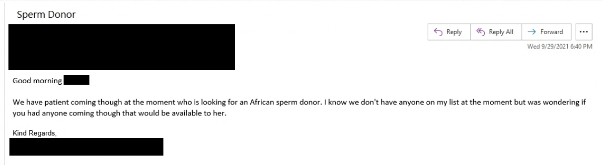

No One Told Me What Infertility Would Be Like For a Black Man. That's Because Nobody Knows.
By K. Jared Wright and Zachary Smith
On the morning of November 25, 2020, I found myself sitting in a fertility clinic waiting to deposit semen that will be sent to a laboratory that will test its sperm count. This will be the fifth and final time I will be doing this after a gauntlet of errors and shuffling between different clinics, and looking around the waiting room, it dawned on me. I am the only Black man here.
I am a 34 year old, 6’3 Black man who weighed over 330lbs at the time. Sitting in an Asian-run laboratory in Manhattan that specialized in fertility treatments, I definitely stuck out like a sore thumb. But even further, besides the nurses who took vitals and blood work, none of the medical professionals were Black.
For any Black person, being the only Black person in the room is not an unfamiliar situation. But on the cusp of life-altering news, I realized that this was more than that. There were no discussions about it in the Black community, and I didn’t know of any resources that I could turn to for guidance.
I was eventually diagnosed with non-obstructive azoospermia, which is the absence of and failure to produce sperm in my ejaculate, and considered the most severe iteration of male infertility. Since the moment I received my diagnosis, it was clear that there was a stark disparity in the fertility healthcare system regarding representation and viable options available to black men.
Infertility is typically a disease that is associated with women. And while there are copious studies, websites, and consultants dedicated to female infertility, for men, the conversations are few and the support scarce. When specifically talking about black men, resources are nearly non-existent. .
I would love to mention a statistic about being “one of the X-percentage” of black men suffering from male infertility, but the number is relatively unknown. There is a lack of studies on the issue, and how infertility may affect black men more than other ethnicities. On the Centers for Disease Control and Prevention website, the only mention of male infertility is in a 2008 whitepaper. For the Department of Health and Human Services, male infertility is only mentioned in a few FAQ’s for the Office on Women’s Health. Neither mention ethnicity in any capacity.
On social media, the land of information exchange and a conversation for everything, there is also not much in the way of discussion on black male infertility. To give you an idea, an informal Instagram search of #infertility shows just under 2 million posts. Search for #maleinfertility and you will see just under 60,000 posts. When you search for #blackmaleinfertility, 19 posts are visible.
On my journey to having a child, my wife and I have explored every option, and at each turn, I felt like the only Black man in the room. From medical research and support to sperm banks and fertility clinics, there has been a lack of conversation and support to help me cope with my infertility.
So let’s talk about it.
Let me introduce myself
My mother will tell you that growing up, if there was an ailment that was possible for a child to get, then I likely would. I have had a number of surgeries on my left ear due to my inability to hear out of that side of my head, and I will never forget the Summer in my late-teens where I lost eight pints of blood. Still, she and I both never would have imagined this diagnosis, even when we were promised otherwise. From birth, I was born with my urethra not located at the tip of my penis, a condition known as hypospadias. I had to get my urethra constructed, and my doctor told my mother that the surgery would not impact my fertility as an adult, which is something my doctor stands by to this day.
“The doctor assured us that his fertility would be fine and he would be able to have children properly,” my mom said. So, I never had reason to suspect anything would be wrong. Nobody can predict if they are going to struggle with male infertility, and most men don’t see a urologist as an adult for the first time unless something seems wrong, myself included. Even then, it may not always be detectable at first glance.
At the behest of my wife, I spent a good amount of time through the early stages of this journey marching from medical lab to medical lab, wanting an answer about my fertility. Even after I took a CT scan in order to see if there were any notable issues, my urologist at the time said everything looked normal. I persisted in telling my wife that everything was fine, and she still requested I get the semen analysis.
A semen analysis tests the amount of semen in a man’s sperm. As I mentioned, the results were not ideal. So much so that my urologist dropped me because I had no sperm in my ejaculate, and he felt it was beyond his purview. When I asked if he could refer me anywhere, I was simply told “no” and the line went dead. Eventually, after a handful of subsequent semen analyses, I was recommended by my Primary Care Provider to get in touch with Dr. Boback Berookhim with Northwell Fertility. This led to two surgeries that would eventually equate to nearly $50,000 of billables to my insurance company in an attempt to optimize the little sperm I was working with.
The first was a varicocelectomy, which is a procedure that reduces large and wide veins on the scrotum, which can hinder the production of sperm. This allowed for more ideal conditions to produce any sperm (if any existed at all) and the best opportunity to extract sperm for the micro- TESE.
A micro-TESE, or a microscopic-assisted testicular sperm extraction, is a surgery removing sperm directly from the testicles, which provides the most efficient chance at locating sperm to be used in subsequent in vitro fertilization (IVF) procedures. From the micro-TESE, the testicular tissue is frozen in anticipation of fertilizing recovered sperm with eggs that are retrieved from a female partner to use in potential embryo implantation procedure.
In short, this was the best chance for my wife to be pregnant with my sperm.
The whole process was alienating. This was an invasive procedure involving some of the most delicate parts of my anatomy. Not having any resources to turn to or a community who could offer consultation left me with more questions than answers. Why wasn’t there representation for black male infertility, and why was my community not equipped to help me?
A White Mans Disease
Through my journey it has been especially difficult to find anyone to relate to. I loved the support I was getting from people close to me, but it was difficult when people would tell me ‘you’ll be good’ or ‘everything will be okay’ when they had no idea on what it meant to deal with infertility in the first place. Exactly how would I be good?
But what could they say? Male infertility was never discussed in my community, and there was no representation in the media growing up that could prepare my friends and family for this reality. Dr. Ronald Anglade, one of few Black urologists in the United States says that to even get somebody to be evaluated can take coaching, never mind talking about it with their peers.
“I think in couples of color, I would say that infertility still sort of has a stigma attached to it, particularly for the male,'' says Dr. Anglade. I think that men of color really feel that their virility, or their ability to father children is very important.
Some in my own family struggle with my diagnosis, often oscillating between whether or not I am infertile. When I want to discuss what I am going through, they tend not to want to hear it, or listen to me talk about what I’m going through as long as they can stomach it.
I stomach it for as long as I can then it’s ‘see you later.'
To listen to Jared's father speak with Jared dad in the car. His mother is open minded and gives money when needed, but never asks about the process because "it's none of her business."
His father on the other hand personifies the stereotype of "we don't talk about that here." He is still unsure if he believes Jared is infertile, and refuses to talk about it unless directly confronted. As the audio clip will show, he will make excuses to get out of the conversation. He wouldn't talk about it with anyone, and he can't understand why Jared is doing this for his capstone and announcing it to the world.
I have noticed that the lack of discussion in my family is not an anomaly. The lack of discussion among infertility and other similar issues can be attributed to a distrust in the medical system that extends for generations
Medical experts surmise that one reason this issue is not talked about in the Black community can relate to a mistrust in the healthcare system, which many also view as a reason for not obtaining their COVID-19 vaccinations.
“There’s this huge legacy of mistrust that goes back to persons with syphilis being studied,” says Dr. Tia Jackson-Bey, reproductive endocrinologist and infertility specialist with Reproductive Medical Associates of New York, referring to the USPHS Syphilis Study at Tuskegee. “This experiment was not about vaccinations, it was actually about preventing access to cures that were determined during the course of the study of what happens with syphilis.”
“There has to be some kind of a reckoning from the healthcare world at large,” continues Dr. Jackson-Bey. “ You see army recruitment in every underserved Black and Brown community in this country, but nothing saying ‘okay, come and have a fertility assessment.”
In her book Medical Apartheid: The Dark History of Medical Experimentation on Black Americans From Colonial Times to the Present, Harriet Washington highlights the systemic experimentation on Black patients, including reproductive health.recounting how clinics fitted more African-American women than white women with intrauterine devices (IUDs). This spurred many thoughts that the Federal Government was attempting to stifle Black population growth. “A history of forcible sterilization fed suspicions that the federally financed birth-control clinics in their neighborhoods were attempts to discover the best way to limit or even erase the black presence in America,” Washington said (p.198).
I don't want to be the change I want to see in the world.
Listen to Mike Gray speak about his experience with black male infertility.
The stigma of black male infertility doesn’t end with me. Mike Gray is the only other Black man who agreed to go on record for this story, but his name was changed to keep him anonymous. Gray is an educator in Atlanta, Georgia, and says it is important for him to remain anonymous because he does not want his infertility to be the defining point in his life. “I don't want to be the spokesperson or the African American male infertility ‘go-to guy’,” Gray says. People say ‘you should be the change that you want to be.’ And so, no, there wasn't information out there for me when I was at the peak of my frustrations, but I'm just not ready to be there for somebody else, either.”
Despite not wanting to be the change he sees in the world, Gray wants there to be a conversation around the topic in order for Black men to gain help and resources. “I would definitely love for African American male infertility to be a topic of discussion, and for there to be light brought to the issue,” Gray says. “Just being able to Google and seeing something like ‘15% of African American men have this condition,’ to see this statistic or something to know that I'm not alone.
Gray was the first Black man I ever spoke to who knew what I was going through. He says he has not encountered other Black men in a similar situation either. In fact, before his diagnosis, he didn’t believe Black men could be infertile.
“I feel like I have a white man’s disease,” says Gray. “I'm Black. But, am I really? I didn’t even know infertility for a man existed, let alone a Black man.”
I wish I could say that this is as bad as the disparity gets. But in between my surgeries, my wife and I started looking at potential sperm donors as a precaution to being unable to have our own children, and we found ourselves navigating another disappointing landscape of donor disparity alone.
A Child Like Us
Thirty eight.
That number will come into play shortly.
As the reality of my diagnosis set in, my wife came home one day in early 2021 with information on sperm banks should we need to find a sperm donor as an alternative option for having a child. My wife is Caucasian and I am Black, so we wanted a child that looks like us. To do this, we needed to find a Black sperm donor. But when we looked at four of the major sperm banks in the country, we were alarmed by what we found. . Between California Cryobank, Xytex, Seattle Sperm Bank, and Fairfax Cryobank, we found that there were a vast amount of white donors to examine, with numbers into the thousands. The number of black donors we found? Thirty eight.
How could that be so low? Michelle Ottey, laboratory director for Fairfax Cryobank, says that there are immense difficulties obtaining donors from communities of color.
“It's just really difficult to even get guys to want to talk about it. And then there seems to be a lot of skepticism about it,” says Ottey. “ I think a lot of that is because there's not enough conversation about it. And maybe because people don't realize how much need and desire there is for people, to build their families with donors that look like them with donors that share their cultural heritage, their ethnic background.”
Becoming a donor is already a highly selective process, but one that multiple sperm banks insist is not determined by ethnicity. Ottey says after applying to become a donor at Fairfax Cryobank, 90% of all potential donors are eliminated. Reasons can include the potential donor participating in high risk behaviors as determined by the U.S. Food and Drug Administration, displaying a history of medical instability, or my arch nemesis, possessing low sperm count.
For the few who do make it through, the entire process takes about four to six weeks on average. After that, it can still take months for a donor to make it into a catalog.
Sperm banks typically recruit from directly in the area they are located in, with a popular tactic targeting local college campuses, with Ottey saying that they have even tried directly reaching out to historically black colleges and universities (HBCU). When we reached out to the HBCU’s, one person called our editor asking if our inquiry was legitimate. The rest didn’t answer at all.
Local recruitment makes sense for sperm donors because the less time spent transferring sperm the better. But in spite of sperm banks being spread throughout the country, their donor demographic makeup is astonishingly similar. But Angelo Allard, general supervisor of Seattle Sperm Bank, points out a potential problem.
“Where we're located, we do not have a high population density of black or people of color,” says Allard, from the Seattle Sperm Bank’s office in King County, Washington, which has a 7 percent Black population. “But if you take for example, Xytex, who's based in Atlanta, GA, where the population is highly densely populated with African American, their donor population is still very low, which is concerning considering how much of the population of their community is non-Caucasian.”
This is true. According to the latest census information, 51 percent of the population in Atlanta is Black. Less than 2 percent of the current donors on the Xytex website are Black. Xytex has not responded to comments for this story.
[MAP?]
This does not mean that demand for Black sperm isn’t high. Due to the scarcity of Black sperm, once it is listed in a sperm bank’s catalogue it often sells out in a few days, causing other patients to be waitlisted until the bank finds another suitable donor. And while the situation is tenuous in the United States, it is straight up dire internationally.
“Europe is very, very desperate, not just desperate for donors, but for Black sperm donors,” says Corey Burke, tissue director of Cryos International. “We're just not able to fill out requests worldwide. We can't get [donors] in Denmark, we can't get them in other European locations, and we can't get them in our three locations we have in the US.”

An international email requesting a Black sperm donor from a U.S sperm bank.
“People don't realize how much need and desire there is for people, you know, to build their families with donors that look like them with donors that share their cultural heritage and their ethnic background,” Ottey says.
While Burke acknowledges that donor recruitment strategies haven't changed much in the last thirty years, some sperm banks are trying to be creative in their marketing. Burke has tried setting up a tent at a local music concert, and Ottey says she is seeking to increase the amount of Black donors through social media influencers.
“We're really trying to sort of reach out that way, because that's the demographic that we have the most success with, 21 to 29 are the majority of our active donors,” she says. “And they're the ones who are using social media platforms for everything, not just friendship interactions.”
The pandemic, while terrible on many accounts, has offered a glimmer of hope. Ottey says Fairfax Cryobank has seen a 233% increase in Black donors during the last two years, though they still only make up a fraction of the donor pool.
This is consistent with other sperm banks, with Burke saying that the pandemic gave a lot of people motivation to start a family.
[QUOTE FROM BURKE]
[Transition to IVF]
A Barrier to Entry
My micro-TESE was a success. Sperm was successfully extracted from my body, and after doctors extracted six eggs from my wife, my wife and I could consider IVF as an option. In two sentences, I mentioned two major operations that notoriously cost thousands of dollars. I am in a fortunate position because I live in New York and my insurance plan is very good for fertility treatments, but for many others this is not a reality. .
Dr. Anglade points out that cost is a huge barrier to entry for IVF for everyone, but especially for his low-income patients without insurance.
“We find a lot of people who are limited in the avenues that they can pursue based on the cost,” says Dr. Anglade. “It's one of these procedures, which are quite costly, and generally not covered by insurance. Financially, if you can't afford it it's very challenging.”
If I did not have insurance, I would have paid $50,000 out of pocket for them to just tell me about my infertility. Nearly another $55,000 went into the egg retrieval and one round of implantations. This is not money that a normal American family has on-hand, and sets a huge disadvantage on people of color, who have a median income of $38,600 according to a 2018 report by the U.S. Census Bureau.
The interactive graph below displays each bill my insurance company received for my two surgeries and my wife’s egg extraction and implantation. For a man in New York, this is what the cost of fertility can look like. The module does not include the countless copays and other out of pocket expenses I shilled out along the way.
How much does infertility cost?
0 days trying to have a child.
$0 total billed to insurance company.
Headline
Description of the cost
Being located in New York is important. In 2020, legislation passed mandating that large group insurance plans cover IVF, and that all insurers must cover medically necessary fertility preservation (egg or sperm freezing). This is one of the most advanced fertility coverages in the country. In Georgia, where Mike Gray lives, there is not a coverage mandate for infertility treatments. This is the case for 19 states.
Even if a state does mandate coverage, it does not mean that the process will be cheaper. Dr. Leyla Bilali, owner of fertility homecare service Fertility Together has noticed a particular trend.
“Any of the major cities that you can think of are going to be the most expensive— New York, Miami, LA, Chicago, all of the places where fertility clinics thrive,” said Dr. Bilali. “So whether that's because people are waiting longer to have children and so they need to use assisted reproductive technology, the fertility clinic clinics thrive and can charge the prices that they charge. New York is definitely one of the most expensive places.”
Great. As a 34-year-old man trying to have kids later in New York City, this was...great.
IVF costs on average well over $20,000 when you factor in the procedure, medication, and consultation, according to FertilityIQ. And while it has three to five times higher rates of success to other fertility options like intrauterine insemination, it is five to forty times more costly. And because the average fertility patient will undergo multiple rounds of IVF, cumulative costs can range from $40,000 - $60,000. Fortunately, those in medical circles like urologist Dr. Joseph Alukal of Columbia Presbyterian say this is a conversation among his community.
“A lot of colleagues I'm really proud of around the country have been looking at issues of access to fertility care, and the obviously kind of the disproportionate burden that's borne by patients of color in terms of not having the same access to fertility coverage to their insurance and not being able to pay out of pocket for procedures,” Dr. Alukal said. “ I think we're all correctly banging the drum about trying to figure out, you know, what do we do to make this kind of care, access to needs to be more equitable?”
Patient advocacy group RESOLVE: The National Infertility Association pushes for a lot of fertility policy at both state and national levels including those surrounding insurance coverage of infertility treatments, reporting on 77 bills in total in 2019-2019.
Couples can also apply for grants such as from the Baby Quest Foundation, but many such grants have restrictions based on faith, location, or specific steps in the process. Even then, relying on grants is a risky endeavor that may never go in a patient's endeavor. Many fertility sites also offer loans, but options range from at-clinic loans to credit cards.
Adoption is also an alternative to IVF. But Dr. Bilali says that this is no better if your barrier to starting a family is cost.
“Adoption in this country costs a ridiculous amount of money. It's not like that's a cheap option. So there just isn't there just kind of shit out of luck.”
Still aid to help those who can’t afford IVF on their own is limited, and in a country obsessed with whether or not a woman has a right to choose to have a baby, a whole population of would be parents are blocked out from starting a family due to lack or resources.
“How can you say to one group of people, ‘unless you have enough money in your pocket, you can’t have a kid,’” Dr. Alukal asks.
If you went through the module, you will see that the first implantation failed. To try again will be at least another $8,000. Which we will, because our insurance covers it. But for many families, especially families of color, one shot is all they have.
This only gets better with exposure
I wanted to tell my story because I hope it can reach more Black men out there who are suffering through this, so they can know that they are not alone. I am also hopeful that more resources can be made available for anyone interested so they can know of the help that can and is available to them. If you informally google “black male infertility” or something similar, you’d only come across two studies (here and here), one of which is more of a focus group than a study. Small attempts have been made to bring this to life. TJ Peyten, author of Semen Secrets, tells her story through journal entries about her struggle with her husband’s infertility
Peyten says that encountering an infertility diagnosis was uncharted territory for her and her husband.
“Prior to our diagnosis of infertility had not heard about infertility, at least amongst our friends and family,” she said.
The difficulties started immediately, as Peyten said she could not relate to anyone in the room, as there were no Black couples she encountered who were in a similar situation.
“In joining various groups with the infertility community, everyone was white,” Peyten says. “As an African-American couple dealing with our specific type of infertility, it was important for me to not necessarily share my story to get it out there, but hopefully to share it to see if someone else could relate to the story and to see if I could find other people that look like me who are dealing with it, but just not speaking up. In conjunction with not finding someone who looks like her and her husband, the infertility diagnosis took a major toll on her marriage as well.
“We very much went through the stages of grief. We went through a period where we wanted to get a divorce,” she said. ”You go through all of these various emotions. Our relationship ebbed and flowed. When you have two people that are grieving, sometimes hurt people, hurt people.”
So we went through the stages of each other hurting each other's feelings, we went through the stages of comforting each other. And then we had good poker faces. So when we got in front of others, no one would ever know what was wrong.“
TJ and her husband have explored other means in order to have a child, and ended up adopting a daughter.
“I was not going to let infertility ruin my life anymore. If we were going to be childless, there has to be another purpose” she says. “Now we have our baby and we are successfully parents. Not in the way we imagined, but definitely in a way that has brought us so much joy. Just being parents in our journey, we appreciate it so much more. Not to say that other parents don’t appreciate it, but when you’ve gone through something, it’s just a different feeling when you come out on the other side.
I was not going to let infertility ruin my life.
TJ Audio discussing adoption, donor sperm, foster to adopt, and husband’s love for daughter
TJ says in order to help end the stigma of infertility, a dialogue should happen in the education of what fertility means.
“I just think there is a lack of education about why sperm donors are needed. I think it's a societal portrayal of what sperm donation looks like,” she says. “For a lot of black men who don't already have children, some of them are not even married. So do you want to give up your sperm to have to have that conversation?”
Peyten says the taboo nature of infertility is stifling and unproductive to helping those diagnosed find their way, particularly in the Black community.
“We hear about sperm donation, and it’s a scary term. It’s like somebody said they saw Bigfoot. It’s definitely not something that a man, let alone a Black man is going to jump into,” she says. “There may be a shortage of donors because of the approach that's being used. But two, it's probably a shortage of donors because of lack of education and knowledge about why sperm donation is needed, and the process of sperm donation. I don’t think I’ve seen any education about sperm donation, what it is and what it isn't outside of my husband and I exploring it because we had to.”
Peyten also believes infertility should be more of a prominent discussion at the high school level, where young people are coming into their own as people.
“Maybe in high school or early college people should understand that you may need to freeze your eggs when you come out of school because you don’t know or if you’re planning to be a father, you may need to get a semen analysis early on,” she says.
If you are a Black man suffering from infertility and would like to share your story, please email KJWZSinfertility@gmail.com
If you need to talk to somebody, please contact the Resolve hotline 866.NOT.ALONE.